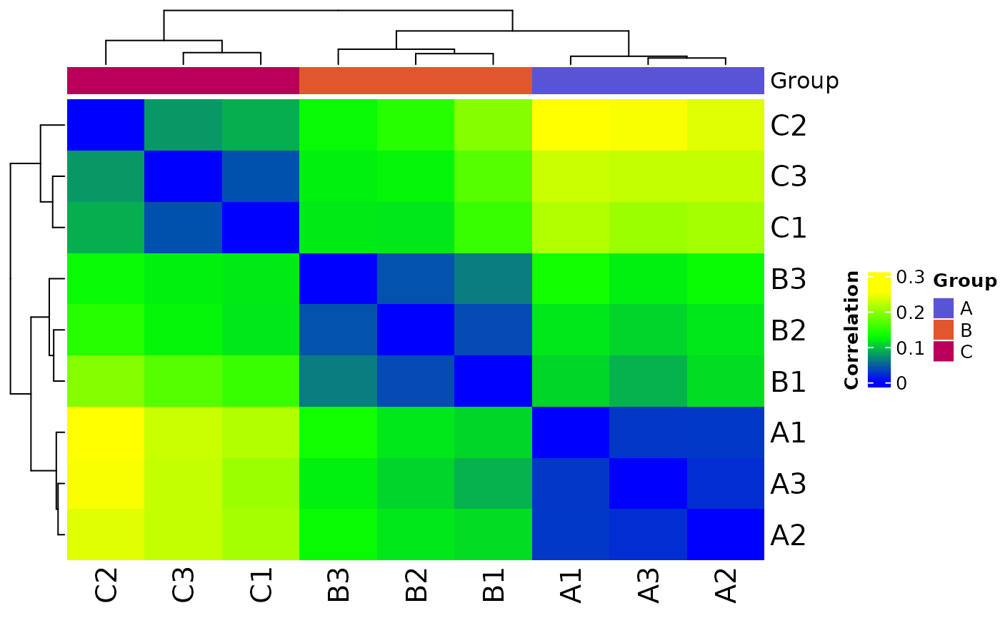

The first argument can be a multiOmicDataset object (moo) or a data.frame containing counts.
For a moo, choose which counts slot to use with count_type & (optionally) sub_count_type.
For a data.frame, you must also set sample_metadata.
All other arguments are optional.
Arguments
- moo_counts
counts dataframe or
multiOmicDataSetcontainingcount_type&sub_count_typein the counts slot- ...
arguments forwarded to method plot_corr_heatmap_dat
Value
heatmap from ComplexHeatmap::Heatmap()
Methods
| link to docs | class |
| plot_corr_heatmap_moo | multiOmicDataSet |
| plot_corr_heatmap_dat | data.frame |
Method Usage
# multiOmicDataSet
plot_corr_heatmap(moo_counts,
count_type,
sub_count_type = NULL,
...)
# dataframe
plot_corr_heatmap(moo_counts,
sample_metadata,
sample_id_colname = NULL,
feature_id_colname = NULL,
group_colname = "Group",
label_colname = "Label",
color_values = c(
"#5954d6", "#e1562c", "#b80058", "#00c6f8", "#d163e6", "#00a76c",
"#ff9287", "#008cf9", "#006e00", "#796880", "#FFA500", "#878500"
))See also
Other plotters:
plot_expr_heatmap(),
plot_histogram(),
plot_pca(),
plot_read_depth(),
print_or_save_plot()
Other heatmaps:
plot_expr_heatmap(),
plot_expr_heatmap_dat
Other moo methods:
batch_correct_counts(),
clean_raw_counts(),
filter_counts(),
normalize_counts(),
plot_expr_heatmap(),
plot_histogram(),
plot_pca(),
plot_read_depth(),
run_deseq2(),
set_color_pal()
Examples
# plot correlation heatmap for a counts slot in a multiOmicDataset Object
moo <- multiOmicDataSet(
sample_metadata = as.data.frame(nidap_sample_metadata),
anno_dat = data.frame(),
counts_lst = list("raw" = as.data.frame(nidap_raw_counts))
)
p <- plot_corr_heatmap(moo, count_type = "raw")
# plot correlation heatmap for a counts dataframe
plot_corr_heatmap(
moo@counts$raw,
sample_metadata = moo@sample_meta,
sample_id_colname = "Sample",
feature_id_colname = "Gene",
group_colname = "Group",
label_colname = "Label"
)
